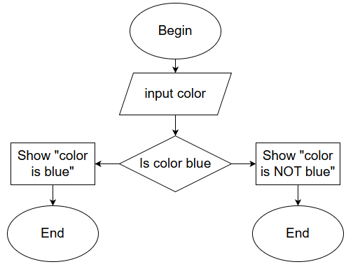
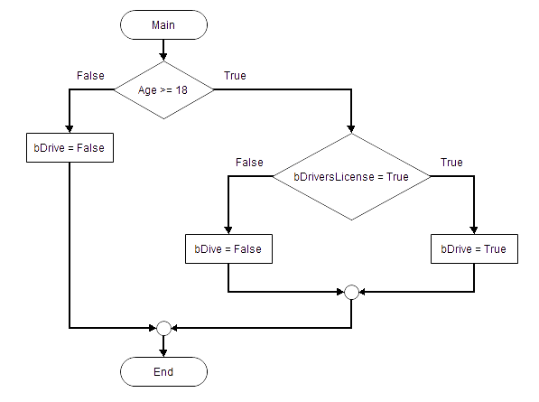

Algorithms & Problem Solving Grade 10
Before writing a single line of code, good programmers plan their solution. This page covers algorithms, pseudocode, flowcharts, IPO tables and trace tables — the thinking tools of programming.
What is an Algorithm?
Imagine you want to make a cup of tea. You don't just randomly pour hot water and hope for the best — you follow steps: boil water, put teabag in cup, pour water, wait, add milk. That ordered list of steps is an algorithm.
In computing, an algorithm is a precise, step-by-step set of instructions used to solve a problem or complete a task. Every program you write starts as an algorithm in your head (or on paper) before it becomes code.
Think of an algorithm like a recipe. A recipe tells you exactly what ingredients to use, in what order, and what to do with them. A computer program is just a recipe written in a language the computer understands.
Key Characteristics of a Good Algorithm
| Property | Meaning | Example of failure |
|---|---|---|
| Clear | Every step is unambiguous — only one interpretation | "Do something with the number" — too vague |
| Finite | It must end after a certain number of steps | A loop that never stops |
| Correct | It must produce the right answer every time | Adding instead of multiplying |
| Ordered | Steps must follow a logical sequence | Calculating average before calculating total |
| Efficient | No unnecessary steps or wasted resources | Calculating the same total three times |
Why Do Algorithms Matter?
Before writing code, planning with an algorithm helps you:
- Spot logical errors before they become code bugs
- Save time — plan once, code faster
- Communicate your solution to others
- Prove your solution is correct
In 1999, NASA's Mars Climate Orbiter crashed because one team used metric units and another used imperial in their calculations. A clear algorithm with defined units would have caught this. The mistake cost $327 million. Accurate algorithms matter.
The Problem-Solving Cycle
- Understand the problem — State it in your own words. What is given? What must be produced?
- Plan the solution — Write pseudocode or draw a flowchart. Use an IPO table.
- Implement — Convert your plan into Delphi code.
- Test — Run the program and check output against expected results using a trace table.
- Fix errors — Debug and correct any mistakes, then retest.
IPO Tables (Input – Process – Output)
An IPO table is the first planning tool you use. It forces you to identify three things before writing any code: what data goes in, what happens to it (process), and what comes out.
| Input | Process | Output |
|---|---|---|
| Length, Width | Area = Length × Width Perimeter = 2 × (Length + Width) |
Area, Perimeter of rectangle |
| Mark1, Mark2, Mark3 | Total = Mark1 + Mark2 + Mark3 Average = Total ÷ 3 |
Total marks, Average mark |
| A number (num) | IF num MOD 2 = 0 THEN "Even" ELSE "Odd" | "Even" or "Odd" |
| Temperature in Celsius (C) | F = (C × 9/5) + 32 | Temperature in Fahrenheit (F) |
In exams you may be asked to complete an IPO table. Always write the Process column as a formula or decision — not just "calculate it". Show your working: Area = Length × Width, not just "work out the area".
Pseudocode
Pseudocode is fake code written in plain English that describes the logic of a program. It is not real Delphi code — it is for planning only. Anyone who understands programming should be able to read your pseudocode, even if they don't know Delphi.
Pseudocode Rules
- Use CAPITALS for keywords:
IF,THEN,ELSE,ENDIF,WHILE,FOR,INPUT,OUTPUT - Indent inside structures to show what is inside a block
- Use
:=or=for assignment (both are accepted) - Keep it short and clear — no Delphi syntax needed
- Start with START and end with END
SET total TO 10 // assignment
INPUT age // get data from user
OUTPUT total // show result
SET area TO length * width // calculation
IF age >= 18 THEN
OUTPUT "May vote"
ELSE
OUTPUT "Too young to vote"
ENDIFExample: Find the Average of Three Marks
START
INPUT mark1
INPUT mark2
INPUT mark3
SET total TO mark1 + mark2 + mark3
SET average TO total / 3
OUTPUT "Total: ", total
OUTPUT "Average: ", average
ENDExample: Even or Odd
START
INPUT num
IF num MOD 2 = 0 THEN
OUTPUT num, " is Even"
ELSE
OUTPUT num, " is Odd"
ENDIF
ENDFlowcharts
A flowchart shows the steps of an algorithm as a picture using standard symbols connected by arrows. It is easier to spot errors in a diagram than in written text, which is why flowcharts are so useful.
Flowchart Symbol Reference

Worked Example: Is a Number Even or Odd?
This flowchart takes a number as input, checks if it divides evenly by 2, and displays "Even" or "Odd" before ending.

The diamond shape always asks a Yes/No question. The two arrows leaving the diamond are labelled YES and NO. Both paths must eventually reach the END oval.
Trace Tables
A trace table is used to test an algorithm by hand. You pick a test value, then track every variable as you step through the algorithm line by line. This helps you check whether the algorithm produces the correct output.
Trace Table Example: Even or Odd (num = 7)
| Step | Instruction | num | num MOD 2 | Output |
|---|---|---|---|---|
| 1 | START | — | — | — |
| 2 | INPUT num | 7 | — | — |
| 3 | IF num MOD 2 = 0? | 7 | 1 | — |
| 4 | Condition FALSE → ELSE branch | 7 | 1 | — |
| 5 | OUTPUT "Odd" | 7 | 1 | "Odd" |
| 6 | END | — | — | — |
Trace Table Example: Average of Three Marks (90, 70, 80)
| Step | Instruction | mark1 | mark2 | mark3 | total | average |
|---|---|---|---|---|---|---|
| 1 | INPUT mark1 | 90 | — | — | — | — |
| 2 | INPUT mark2 | 90 | 70 | — | — | — |
| 3 | INPUT mark3 | 90 | 70 | 80 | — | — |
| 4 | total = mark1+mark2+mark3 | 90 | 70 | 80 | 240 | — |
| 5 | average = total / 3 | 90 | 70 | 80 | 240 | 80 |
| 6 | OUTPUT total, average | — | — | — | 240 | 80 |
Comparing Algorithms
When two algorithms solve the same problem, we compare them. Three key criteria matter in CAPS exams:
| Criterion | What it means | Poor example | Better example |
|---|---|---|---|
| Sequence | Steps must be in the correct order | Calculate average BEFORE total | Calculate total first, THEN average |
| Precision | Each step must have one clear meaning | "Calculate the answer" | SET total TO mark1 + mark2 + mark3 |
| Efficiency | No unnecessary steps or repeated work | Calculate total three separate times | Calculate total once and reuse the variable |
Common Algorithm Patterns in Delphi
Finding Smallest and Largest Values
The trick: assume the first value is both smallest and largest, then compare the rest one by one.
var
iNum1, iNum2, iNum3: Integer;
iSmallest, iLargest: Integer;
begin
iNum1 := StrToInt(edtNum1.Text);
iNum2 := StrToInt(edtNum2.Text);
iNum3 := StrToInt(edtNum3.Text);
iSmallest := iNum1; // assume first is smallest
iLargest := iNum1; // assume first is largest
if iNum2 < iSmallest then iSmallest := iNum2;
if iNum3 < iSmallest then iSmallest := iNum3;
if iNum2 > iLargest then iLargest := iNum2;
if iNum3 > iLargest then iLargest := iNum3;
lblResult.Caption := 'Smallest: ' + IntToStr(iSmallest)
+ ' Largest: ' + IntToStr(iLargest);
end;Swapping Two Values
You always need a temporary variable to swap values. Without it, one value gets overwritten before it can be saved — like trying to swap two glasses of water without a third empty glass.
var
iA, iB, iTemp: Integer;
begin
iA := StrToInt(edtA.Text);
iB := StrToInt(edtB.Text);
iTemp := iA; // step 1: save A into temp
iA := iB; // step 2: overwrite A with B
iB := iTemp; // step 3: put saved A into B
edtA.Text := IntToStr(iA);
edtB.Text := IntToStr(iB);
end;Even or Odd
var
iNum: Integer;
begin
iNum := StrToInt(edtNum.Text);
if iNum MOD 2 = 0 then
lblResult.Caption := 'Even number'
else
lblResult.Caption := 'Odd number';
end;Factor Check
A number is a factor if it divides another with no remainder (MOD = 0). For example, 3 is a factor of 12 because 12 ÷ 3 = 4 with remainder 0.
if iNum2 MOD iNum1 = 0 then
lblResult.Caption := IntToStr(iNum1) + ' is a factor of ' + IntToStr(iNum2)
else
lblResult.Caption := IntToStr(iNum1) + ' is NOT a factor of ' + IntToStr(iNum2);